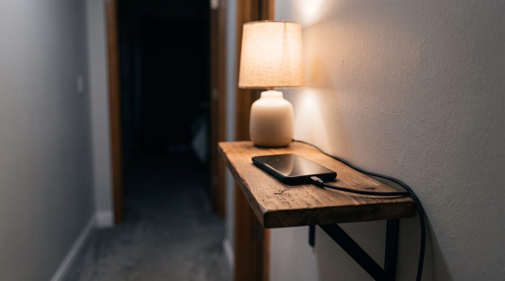
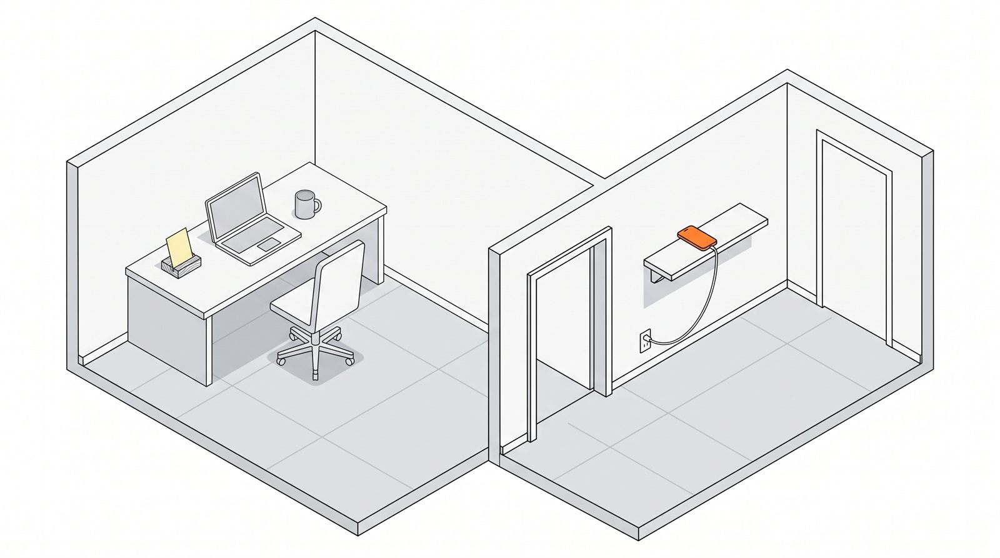

2026.09.08
AIに任せると記憶に残らないのか — 54人のEEG研究でわかったことと、その限界
AIで書いた人の83%が、直後に自分の文章を引用できませんでした。ただし54人・査読前の研究です。
2026.09.08
寝る前のスマホは本当に眠りを妨げるのか — 「2時間前」より効いていたのは場所だった
就寝前2時間の利用は睡眠とほぼ無関係。差が出たのは「ベッドで使うかどうか」でした。
2026.09.08
通知で中断されると作業に戻るまで何分かかるのか — 「23分15秒」の出どころを確かめた
有名な「23分15秒」は、引用元の論文に載っていない数字でした。

2026.09.07
スマホの置き場所はどこがいい？ — 寝室に持ち込まない配置の決め方
「充電器とセット」「帰宅動線の途中」「寝たまま届かない」の3条件で決まります。

2026.09.07
机の上にスマホを置くとなぜ集中できないのか — 視界から外す3段階
通知が鳴らなくても、視界にあるだけで集中は削られます。効き方が変わる境目は1つ。